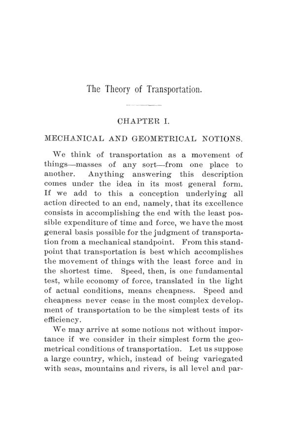

Cooley, 1894: as cidades nascem onde a carga para
Leitura: 10 min
Em 1894, Charles H. Cooley propôs uma teoria geral do transporte: cidades surgem onde a carga é baldeada, e tarifas ferroviárias decidem quem cresce. Pedia o fim da guerra de fretes, sob controle público.


Boston e Chicago servem de prova. Nas ruas antigas de Boston, que segundo a tradição teriam sido traçadas pelas vacas, Charles H. Cooley via um exemplo quase perfeito de arranjo radial, com as vias convergindo para um centro. Em Chicago, só algumas avenidas diagonais quebravam a grade retangular, e provavelmente marcavam estradas rurais anteriores à cidade. Washington combinava os dois princípios de propósito: uma grade cortada por avenidas diagonais que convergem para o Capitólio.
“É injusto com as vacas imaginar que essas ruas não têm plano” (“It is unjust to the cows to imagine that these streets have no plan”)
A observação está nas primeiras páginas de The Theory of Transportation, monografia publicada nas Publications of the American Economic Association em maio de 1894. Cooley assina como ex-chefe da Divisão de Transportes do Décimo Primeiro Censo americano e assistente de Economia Política na Universidade de Michigan. No prefácio, anuncia o plano: escrever uma teoria do transporte de um ponto de vista sociológico, apoiado sobretudo em Schäffle. E reclama que, desde a obra de Kohl, de 1841, ninguém investigara de forma abrangente as leis que distribuem pessoas e riqueza pelo território.
O que faz um transporte ser bom?
Cooley começa pela mecânica. Os testes fundamentais são velocidade e economia de força, que na prática quer dizer barateza. A eles soma um terceiro: o grau de independência em relação ao relevo, isto é, a capacidade de levar velocidade e economia a lugares antes inacessíveis. Todo sistema tem três elementos, a via, o veículo e a força motriz. O progresso segue uma ordem: força humana, animais de carga, veículos de roda puxados por animais e, por fim, a energia química do carvão convertida em vapor.
A roda é o exemplo de que técnica não basta. Os egípcios já faziam carros de guerra tão leves que um homem os carregava sozinho. O que faltava eram estradas. Sem via adequada, o veículo de roda é pior que inútil. Por isso a sela de carga dominou as rotas longas até o período, iniciado no século XVII, em que a Europa ocidental construiu um sistema de boas estradas.
Onde nascem as cidades?
Este é o capítulo que Cooley considerava mais original. Ele admite causas não econômicas: fortes em tempos de guerra, prestígio religioso, a sede de um condado no oeste plano dos Estados Unidos. Mas, numa sociedade industrial, a causa principal da localização é o transporte, e ele a resume numa lei.
“População e riqueza tendem a se acumular onde houver uma quebra no transporte” (“Population and wealth tend to collect wherever there is a break in transportation”)
Quebra é a interrupção que obriga a baldear e armazenar a carga. Se só a carga muda de veículo, a quebra é mecânica. Se muda também de dono, é comercial, e aí surgem mercadores, cambistas, armazéns e toda uma população subsidiária. Daí as grandes cidades no estuário ou no curso baixo de rios navegáveis, onde o navio de mar cede lugar à barca: Hamburgo no Elba, Londres no Tâmisa, Nova Orleans no Mississippi, Nova York no Hudson. O Canal Erie, nota o autor, fez brotar cidades logo depois de concluído. O mesmo vale para a borda do deserto, onde se organizavam as caravanas; Cooley cita Meca e Palmira.
A consequência menos intuitiva é que o simples cruzamento de duas ferrovias não cria cidade. Sem troca de tipo de transporte não há quebra necessária; bastam um entroncamento insignificante e um restaurante. E, à medida que melhoram a troca de vagões e o despacho direto, os pontos de transferência migram para as cidades grandes. É, para Cooley, uma das razões do engrandecimento contínuo das grandes cidades à custa das pequenas.
Quanto vale ganhar velocidade?
Cooley sustenta que haveria renda da terra mesmo num território ilimitado de solo uniforme. Ela nasceria só da diferença no custo de levar a produção ao mercado. O transporte é, portanto, causa independente da renda, ao lado da fertilidade. O exemplo é a queda das rendas agrícolas inglesas depois que navios a vapor e ferrovias abriram o mercado ao trigo americano; no leste dos Estados Unidos, fazendas deixaram de ser cultivadas pelo mesmo motivo.
A imagem que acompanha o diagrama é doméstica. A renda total é um cone de chumbo; o transporte melhorado, o martelo que o achata. Com a velocidade dobrada, a renda no centro cai a um quarto, enquanto na periferia passa a se pagar renda onde antes não se pagava nada. O raciocínio vale para o campo, trocando velocidade por custo de frete e área habitável por área de cultivo lucrativo.
Como deveriam ser fixadas as tarifas?
A teoria privada das tarifas busca a maior receita líquida e se traduz em cobrar o que o tráfego suporta. Cooley adota o ponto de vista público, com duas concessões à ferrovia: as tarifas, no conjunto, devem dar retorno razoável ao investimento, sob pena de algo parecido com confisco; e nenhuma tarifa pode ficar abaixo do custo imediato de mover a carga.
Ele propõe quatro princípios. Justiça entre pessoas, sem discriminação. Aproveitamento das vantagens naturais imóveis, como o trigo do noroeste ou as frutas da Flórida e da Califórnia, com fretes baixos se preciso. Descentralização da indústria e do comércio. E, no resto, a maior liberdade possível às forças econômicas. Até o desconto por vagão completo lhe parece suspeito, por favorecer o grande embarcador; na dúvida, o pequeno deve levar a vantagem.
O alvo principal é a competição entre ferrovias nos poucos pontos onde há rotas rivais. Ela dá fretes menores justamente às cidades grandes e as engorda à custa das demais. Cooley registra que a Interstate Commerce Commission, em seu segundo relatório anual, pensava o mesmo. O apoio popular à concorrência ferroviária, escreve, é pura fidelidade a um princípio fora de lugar.
“lealdade a uma ideia que aqui não tem aplicação prática” (“loyalty to an idea that has here no practical application”)
A tarifa única abolia a distância, e por isso mesmo concentraria. Aplicada aos Estados Unidos de então, diz o autor, engrandeceria as cidades e as manufaturas do leste e impediria o surgimento de novas cidades no oeste. Cooley partilha a opinião comum de que a concentração de população e riqueza tende ao excesso. Prefere fretes proporcionais à distância, com um mínimo para os trechos curtos, e classificação por valor.
Estado ou empresa privada?
Transporte, para Cooley, é uma atividade orgânica: cada parte nada vale sem o resto. O exemplo é uma estrada necessária a mil pessoas que atravessa dez fazendas. Cada fazendeiro teria de construir um décimo dela para colher talvez um milésimo do benefício, e de nada adiantaria se os outros nove recusassem. Daí a ação associada, do município ao condado, do estado à União, da pequena ferrovia ao grande sistema.
O Estado tem a vantagem da unidade e a desvantagem do detalhe, porque lhe falta o motivo do ganho privado. As estradas romanas, com sua solidez desnecessária, são o caso típico. Cooley lembra que, na década de 1830, Michigan projetou três ferrovias e um canal quase paralelos atravessando o estado, aparentemente para distribuir as obras e garantir apoio político. Sua conclusão é deixar construção e operação à iniciativa privada, sob controle público.
O primeiro objetivo do controle é a publicidade: contas ferroviárias confiáveis, em padrão uniforme, e repartições estatísticas com estatísticos competentes. O segundo é unificar onde a ação isolada falha, como no engate automático de vagões, que nenhuma ferrovia adota sozinha. O terceiro é substituir a guerra de fretes por uma combinação mais forte e permanente que os pools, sob regulação pública. A regra das distâncias curta e longa do Interstate Commerce Act lhe parece só uma regra prática, que diz o que a tarifa não deve ser, não o que deve ser.
Na minha leitura
Na minha leitura, o melhor do livro é tratar a tarifa como política territorial. Cooley percebe que o preço do frete não é um detalhe contábil da ferrovia: ele decide onde as fábricas se instalam, quais cidades crescem e quais definham. E percebe que esse preço não se ajusta sozinho. Alguém o fixa, e quem o fixa escolhe, ainda que sem declarar, um mapa de país. A lei da quebra no transporte, por sua vez, continua útil para entender por que portos, terminais e pontos de transbordo concentram atividade.
O dilema que ele deixa é atual. Para acabar com a discriminação contra pequenos embarcadores e cidades menores, propunha suprimir a concorrência e organizar um cartel sob tutela pública. A aposta é que o regulador saiba qual tarifa é a certa e resista a quem tem mais poder sobre ele. Cooley exige do regulador uma teoria das tarifas e estatísticas confiáveis; sem as duas, admite, o controle se reduz a mera crítica.
Glossário
- quebra no transporte
- ponto em que a carga precisa ser baldeada e armazenada; se muda também de dono, a quebra é comercial.
- cobrar o que o tráfego suporta
- fixar cada frete pelo máximo que a mercadoria aguenta pagar sem deixar de ser transportada.
- custo imediato
- custo que a ferrovia evitaria se deixasse de transportar uma carga específica, distinto do custo geral da rede.
- renda da terra
- pagamento pelo uso do solo; para Cooley, depende também da distância e do custo de acesso ao mercado.
- pool
- acordo voluntário entre ferrovias para dividir tráfego ou receitas e evitar a guerra de fretes.
- regra das distâncias curta e longa
- dispositivo do Interstate Commerce Act que limitava cobrar mais por um trajeto curto do que por um longo na mesma linha.
Fontes
- The Theory of Transportation (pp. 13–148). JSTOR · Internet Archive (PDF)
- Sumário da edição no JSTOR: Publications of the American Economic Association, vol. 9, nº 3.
Documento em domínio público (EUA, publicado antes de 1931), via JSTOR Early Journal Content e Internet Archive. Resumo e comentário do autor deste site, sem afiliação com a American Economic Association. Encontrou um erro? Escreva: a correção é publicada no próprio texto, com data.
← Nº 41 · Chicago, 1893: o dinheiro, o juro e a origem do capital Nº 43 · Bevan, 1894: William Petty, o agrimensor que contou a Inglaterra →